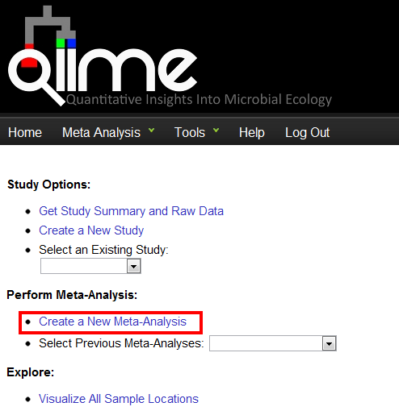
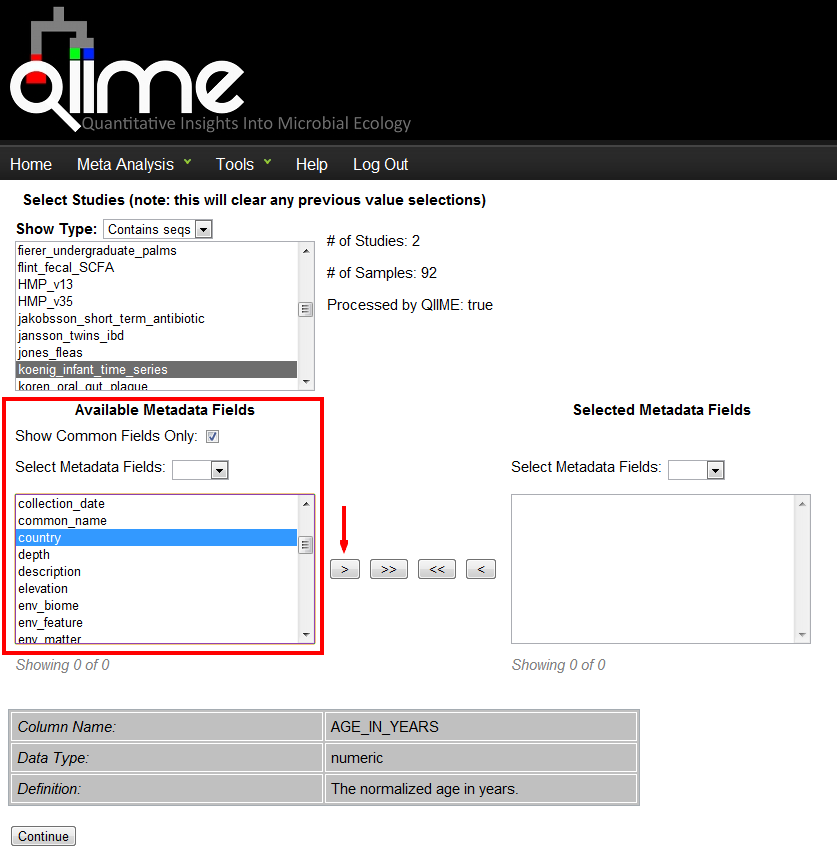

This tutorial explains how to use the QIIME (Quantitative Insights Into Microbial Ecology) web-interface to perform cross-sectional analyses of taxonomic and phylogenetic profiles generated from different studies. The advantage of the web-interface over a local analysis, is access to a more datasets, quicker computations, and an intuitive interface. The only requirement to successfully complete a meta-analysis, is that each study must have MIMARKS-compliant metadata and sequence files. The objective of each meta-analysis can be varied, but in general, it provides a unique perspective of the user’s data.
The essential steps to perform a meta-analysis are outlined below:
The features of the QIIME web-interface will be demonstrated here with publicly available datasets.
To begin a new meta-analysis, users must be registered with the QIIME-DB. Users can register at www.microbio.me/qiime. After registration, a new meta-analysis can be started by clicking “Create New Meta-Analysis” or clicking the “Meta Analysis” tab in the header of the home page. In the new page, enter a name for the meta-analysis, and then you will be ready to perform a meta-analysis. For each study, multiple meta-analyses can be performed and previous analyses can be re-opened from the “Select Previous Meta-Analyses” drop-down menu on the home page.
Step 1: Create a New Meta-Analysis entitled “Tutorial”, then click “Perform Meta-Analysis”.
When a study is opened or a new one is started, the users are directed to a new page where they can select which datasets and metadata fields will be included in the meta-analysis.
From this select-box, users can select which datasets will be analyzed. When hovering the cursor over a study will cause it to display the study abstract and title. By selecting a study, relevant information about the study size will be displayed to the right. Multiple studies can be selected using “Ctrl+Click” on Windows or “Command+Click” on Mac OS X. The “Show Type” drop-down menu above the Select Studies select-box allows users to filter the studies based on some simple criteria:
Note
NOTE: Once the user selects their studies, they should check the statistics to the right of the Select Studies select-box. If the field “Processed by QIIME” is set to “false” the user will only receive a QIIME-formatted mapping file for the studies selected. If the value is “true” it means that there is corresponding OTU table information for all studies selected and they will be allowed to perform downstream visualizations using QIIME.
Step 2: Select “Contains seqs” from the Show Type drop-down menu, and select the “Koenig_infant_time_series” and “Defilippo_children_and_diets” studies from the Select Study select-box, as shown below:

This select-box lists all the metadata associated with the studies selected above. If the “Show Common Fields Only” option is selected, then only the metadata fields that exist between the selected studies will be displayed. Use the buttons to the right of the window to move Available Metadata Field into the Selected Metadata Fields. Only the fields displayed in the “Selected Metadata Fields” window will be included in the meta-analysis.
Step 3: Select “age_in_years”, “country”, and “experiment title”, then press the “>” button.
For each of the metadata fields listed in this select-box, users can select an element and the study-associated field values will be displayed in the box below the select-box. A description of the type of information in the metadata field is also included in the display. Once all the desired datasets and metadata have been selected, click the “Continue” button at the bottom of the page.

The “Meta-Analyses to Perform” page allows users to pick which QIIME scripts to run on the selected datasets. The OTU Table and processing method are required for each meta-analysis. The processing method refers to how the QIIME server will manage the selected operations. In “Serial” mode, each meta-analysis operation will be processed serially, however; in “Parallel”, the operations will be processed using the parallel scripts in QIIME, which primarily affects rarefaction and beta-diversity calculations. If you select over a few thousand samples, then it is recommend to run in Parallel.
Users have the option to create a phylogenetic tree by selecting “TopiaryExplorer Visualization”. Visualizing the tree requires the TopiaryExplorer software, which can be downloaded here. The optional parameters for the other operations are summarized in the links below.
Step 4: Click on the following check-boxes:
- Check beta-diversity
- Click Optional parameters (rarefaction.py)
- Set rarefied at 100.
- Click Optional parameters (beta-diversity.py)
- Select only the “unweighted_unifrac” metric.
- Check 3D PCoA plots
- Click Optional parameters (make_3d_plots.py)
- Select “AGE_IN_YEARS” as a custom axis
- Click Submit

For every meta-analysis, three necessary files are always produced: the OTU table (in BIOM-format), the mapping file, and a zipped file containing all the QIIME output files. If QIIME is locally installed on the user’s computer, the output contained in the zipped file can be passed into the QIIME pipeline for a more customized analyses. By default, all the figures produced (with the exception of the phylogenetic tree) are in HTML format. The data can be represented in several different ways.
Step 5: Click either link for the 3D plot to view the meta-analysis results and enjoy!
Multiple meta-analyses can be performed within the same study. This is a convenient way to organize each meta-analysis.
Step 6: Try repeating this meta-analysis but on the individual datasets or add additional datasets.